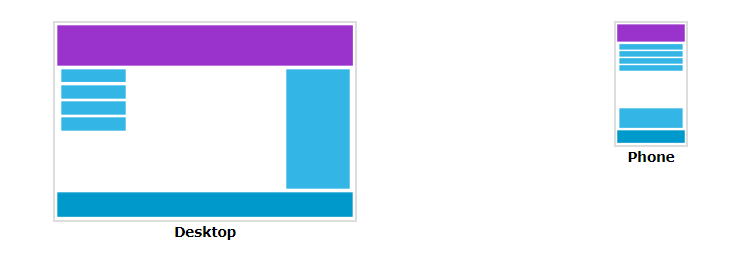

What Is CSS Media Queries?
CSS Media query is a W3C recommendation and a CSS3 module which is used to adapt to conditions such
as screen resolution (e.g. Smartphone screen vs. computer screen).
The media query technique first used in CSS3.
It is an extension of media dependent stylesheets used in different media types
(i.e. screen and print) found in CSS2.
The most commonly used media feature is "width".
It uses the @media rule to include a block of CSS properties only if a certain condition is true.
Add a Breakpoint
Earlier in this tutorial we made a web page with rows and columns, and it was responsive, but it did
not look good on a small screen.
Media queries can help with that. We can add a breakpoint where certain parts of the design will
behave differently on each side of the breakpoint.
